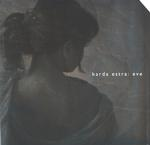

| Artist: | Karda Estra |
| Title: | Eve |
| Label: | Cyclops CYCL 104 |
| Length(s): | 42 minutes |
| Year(s) of release: | 2001 |
| Month of review: | [03/2002] |
| 1) | An Ordinary Mortal | 4.33 |
| 2) | Andraiad | 8.27 |
| 3) | The Pale Ray | 3.28 |
| 4) | Super Electrical | 4.40 |
| 5) | Eve | 7.37 |
| 6) | Sparks That Flash And Fall... | 10.23 |
| 7) | Thoughts And Silences | 3.23 |
We move right into the wonderfully melodic stillness of Andraiad as it opens with oboe and an easy strumming acoustic guitar. Subtlety reigns on this track. As a main reference I call to mind the best side of Steve Hackett, a combination of his Voyage Of The Acolyte and his later acoustic albums. The music becomes a bit more romantic then, and even a bit more melodic. The vocals continue to remind of Cocteau Twins and the like, and although the music can be placed in that 4AD corner of the musical world, it has its own distinctiveness. A difference for instance is the fact that the music creates a certain tension at times, something I often find lacking in the 4AD bands. Maybe it is because the music is more filmic.
The Pale Ray is a bit less romantic, in it a number of melodic lines intertwine and alternate. The result is a bit more directionless than the previous tunes. The vocals are also more apparent here. Super Electrical is a bit on the slow side, but including some more bombastic orchestral parts, because of the rather heavy percussives. However, for the most part the track is a slow moving one with piano accents and even some darker sounds, probably coming from an electrical guitar or bass.
Halfway through the album we come the rather merry sounding title track. This waltzy track has some sinister intermezzo's as well. At the end the violin takes on a more prominent role with its sad wailing. However, in the first three tracks, I have seem to have heard most of what Karda Estra has to offer. The music continues to be good, but I do feel the vocals, if used, should be used more varyingly. The vocal melody lines are now a bit too similar, and this does not help with differentiating the music.
Sparks That Flash And Fall... open darkly with film music. Keyboards and effects reign here, a nice change from the previous. Time for a bit of church organ then, slow and somber. The middle part features slow classically oriented music with the focus sometimes on the wind orchestra, sometimes on the
Thoughts And Silences is opens bit louder, because of the use of the alto sax. The music continues to be slow and thoughtful and, because of the use of acoustic guitar, is also dreamily folky.